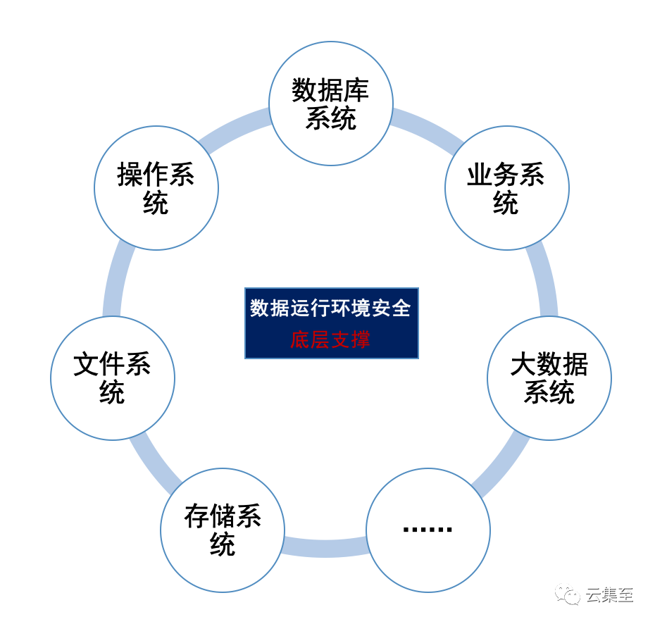
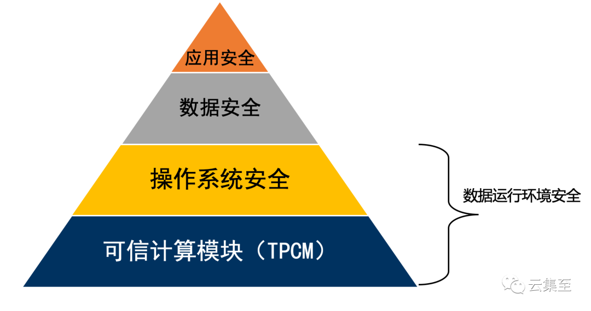

构建数据安全防护的“新基建”——数据运行环境安全保护
经过十多年发展，数据安全市场上逐渐汇聚为数据库安全、文档安全两大技术方向，并衍生出十多种以上数据安全产品，尽管如此，数据泄露、删库跑、勒索软件攻击等数据安全事件仍然层出不穷。经过查阅当前主流数据安全解决方案、数据安全治理方案，发现传统方案往往只定睛数据本身做安全防护，未考虑数据运行环境的安全保护，而导致事故频发。对企业而言，构建一套完善的数据安全保障体系，踏上数据安全治理之路，是一个系统性工程，需要多维设计、分步落地，而数据运行环境的安全作为数据安全的基础，是其中一个重要的基础要素和先决条件。
1、什么是数据运行环境？
1）数据运行环境
所谓数据运行环境，指在数据采集、数据存储、数据处理等环节中的载体的总和，特指数据在产生、流动、存储、应用等过程中赖以附着的进行人机交互的操作系统（如大数据系统、数据库系统、文件系统、存储系统等），是数据赖以存在并确保自身安全的 " 免疫系统 " 和护城河。

数据运行环境示意图
2）数据运行环境安全
数据运行环境安全指所有保障数据可用性、完整性、保密性的系统环境安全因素的总和，如数据运行环境的可信保障、数据运行环境的风险检测与分析，数据运行环境的可信防御、数据的访问与操作权限管控、数据资产的防病毒、防黑客攻击等。数据运行环境安全保护，区别于一上来就致力于防止数据泄漏的安全防护思路，它的步骤更为前置和必要，是在数据安全防护的思路基础之上，为数据提供防止暴力破坏、防止勒索、防止文件删除等安全保障的环境。一旦无法保证数据运行环境的健康，数据有再多的加密、脱敏、管控、审计策略等防护手段也是徒劳。数据运行的地基不稳，上层数据安全技术就沦为镜花水月，不堪一击。这就好比人的免疫系统被破坏而感染病毒，即使身体穿再厚的防弹衣、拿再多的武器，也于事无补，如果不转变思路来应对从内而来的威胁，那就只能等待死亡的降临。
2、数据运行环境面临哪些安全威胁？
数据安全事件频频发生，其中大半威胁是因为数据运行环境不安全造成的。那么，数据运行环境面临的安全威胁主要有哪些呢？
1）内部威胁之删库跑路
数据运行环境安全面临的一个重要威胁点，就是因为针对运维人员的权限管控机制不完善，造成的删库跑路风险，给企业带来严重的后果。以 2020 年最严重的微盟删库事件为例，2 月 23 日，微盟研发中心运维部核心运维人员通过 VPN 登入服务器，并对线上生产环境进行了恶意破坏，微盟系统崩溃，基于微盟的商家小程序均宕机，无法打开，商家线上生意基本停摆。从 23 号晚发生删库操作，到 3 月 1 日晚间发布公告宣布数据全面找回，整个过程历时 1 周。微盟因对运维人员访问和操作数据库的权限管控存在严重不足，暴漏了微盟在数据安全管理方面的漏洞，不仅带来经济上的惨痛损失，同时带给微盟客户的损失也不可估量，微盟的社会公信力受到很大影响。
2）内部威胁之人为错误
内部员工误操作、违规操作等人为错误带来的安全威胁也属于数据运行环境的威胁之一，因此造成的安全事故时有发生。2015 年 5 月 28 日中午 11 时左右，携程官网、APP 同时崩溃。近两个小时后，携程发表声明，简单表示服务器遭到不明攻击，正在紧急恢复。随即，这份声明被携程删除。接着，据说是携程内部泄露的言论称，是服务器某根目录被删除了。同时，网上也传出携程数据库被物理删除的说法。这之后，携程网站才提示用户可以改访问艺龙，但很快，承载不了过大流量的艺龙网也瘫痪了。直到晚上 23:29，携程才恢复正常。携程官微发布声明称，数据没有丢失。次日，携程发布官方解释，称是由于员工错误操作，删除了生产服务器上的执行代码导致。
3）外部威胁之数据勒索
据安全机构研究表示：勒索软件在 2020 年最疯狂，攻击规模和频率以惊人的速度增长。因勒索软件造成的数据安全事件，是数据运行环境面临安全威胁的表现之一，不仅阻碍了企业的正常运营生产，还会带来巨额财产损失或引发严重信任危机。2020 年 11 月 29 日发生的富士康遭勒索软件攻击事件引发关注，位于奇瓦瓦州华雷斯市的富士康工厂遭遇勒索软件攻击，约 1200 台服务器被感染，未加密文件被盗走 100GB，20-30TB 备份数据被删除，部分数据被黑客公布在暗网上。据悉，黑客团伙要求支付 1804.0955 比特币 ( 价值约 2.2 亿元 ) 的赎金，以换取加密密钥和不公布被盗数据的承诺。
4）外部威胁之 0day 漏洞
网络攻击事件层出不穷，黑客组织的攻击手段也花样频出，如对网站进行挂马、在微软的系统中植入木马、黑客程序等方式。近些年来越来越多的地下交易使用 0day 漏洞进行攻击，其中以操作系统中漏洞尤为多见。2018 年 10 月，Windows 系统爆出一个可删除任意文件的 0day 漏洞，该漏洞一旦被攻击者利用，Windows 下的任意文件均可能被删除，可导致用户文件丢失或被劫持，造成极其严重的安全威胁。0day 漏洞代表着不可知，敌暗我明，护网活动防守方普遍是重边界、轻内网防御，0day 导致内网存在整体垮掉的风险。
3、数据运行环境安全保障现状
目前，国内数据安全领域的厂商无论是在产品研发层面，还是在技术应用层面，亦或是治理咨询服务层面，鲜有对数据运行环境安全提出成熟想法和辅助落地的。原因主要两方面：
第一，过于聚焦在细分产品领域的深耕，没有在数据驱动安全的理念上做更开阔的横向拉通。比如：（1）数据库安全类厂商：专注于数据库安全，技术积累都在数据库内核、SQL 词法语法解析等方面；（2）文档安全类厂商：技术积累都在于操作系统驱动层技术，并且大部分针对 Windows 终端居多；（3）云厂商、传统安全厂商：聚焦网络 web 安全等方向。
第二，数据运行环境安全的落地，三大技术壁垒难逾越。（1）操作系统研究要覆盖全 win、linux、IBM AIX、HP Unix、Android、IOS、信创国产操作系统等，每种操作系统原理、架构、运行流程迥异，这需要汇聚各领域操作系统大量专家资源，实现难度大；（2）需要对操作系统原理架构有理解深刻，在各系统内核层编译、驱动层控制、进程加载与运行、文件过滤驱动等方面有深刻积累；（3）数据运行环境安全是建立在可信计算技术思路之上的，需要做到对可信计算技术的深刻理解，能够遵循可信计算思路，与可信 TPCM 芯片建立信任链，对可信度量技术、可信互联、可信程序执行控制技术、标记与强制保护技术等技术具备足够的认知。
4、构建数据安全防护 " 新基建 " ——数据运行环境安全的技术思路

可信计算是数据运行环境安全的技术支撑和保障
针对数据的载体——大数据系统、数据库系统、文件系统、存储系统等的操作系统层进行可信技术安全保障。技术思路分四步走：
1）建立数据运行环境安全管理中心，为复杂系统运行环境提供保障
搭建平台化产品——数据运行环境安全管理中心，引入 Serverless 技术予以保障，受保护的主机运行环境无需安装插件；面对大型、复杂、多区域、多中心的主机环境和大数据分布环境，引入先进的无服务器运算（英文：Serverless computing），作为云计算的一种模型，它提供一个微型的架构，终端客户无需部署、配置或管理服务器服务，代码运行所需要的服务器服务皆由云端平台来提供，可实现对数以万计主机规模的统一管理。目前国内外此类型产品有 Tencent Serverless、AWS Lambda、Microsoft Azure Functions 等。
2）打造可信的基础运行环境，形成系统防护壁垒
等保 2.0 将可信提升到了一个新的强度，在等保一到四级都有可信的要求，主要包含了计算环境可信、网络可信、接入可信。可信的基础运行环境，是打造系统防护增强模式的前提。首先，利用可信计算理念和技术，确保登录系统的用户是可信的、系统运行的程序是可信的，有效防止非法用户、进程及已知或未知攻击；其次，在可持续、自适应网络安全框架下，利用可信计算、机器学习、行为分析等技术，对系统运行环境的整体安全状态进行全面监控，洞察影响主机系统安全的多方面因素，及时发现安全隐患并予以处置，为数据载体提供可信的基础运行环境，形成高防护壁垒。
3）完善身份认证与权限管控机制，实现数据安全三大特性保护
数据安全包含了可用性、机密性和完整性，为了实现数据的三大安全特性，需要完善各数据载体系统的身份认证与权限管控机制，根据业务访问需求授权进程对数据的访问权限，确保受保护的数据不被其他进程违规访问；同时，完善的身份认证和权限管控机制还支持设置进程对授权数据以外的访问权限，强制限制进程只拥有合理的业务访问权限，即便用户由于误操作或被欺骗，为外部威胁赋予了可执行权限，也可以通过为数据指定合法的访问进程，阻止关键数据被破坏，真正实现 " 进不来、拿不走、改不了 "。
4）实现运行环境的可信防御，赋予系统主动防御能力
基于可信度量技术，构建系统免疫能力模型，实现在内核层对可执行程序以及用户行为的精准控制，确保合法的用户、合法的进程，合法的访问文件；主动免疫系统防御机制，还能提供执行程序实时可信度量，阻止非授权及不符合预期的执行程序运行，实现对已知 / 未知恶意代码的主动防御；此外，通过对安全事件分析还原技术，在满足网络安全相关标准的同时，全面提升各数据载体系统的主动防御能力，全面洞察、精准管控和敏锐反馈。
5、结语
从数据运行环境着眼数据安全建设，具有重要的统筹眼光和前瞻性，它跳出了单点安全、被动安全建设思路的局限，紧贴政策合规要求和企业主动安全建设需求，以可信计算为技术保障引擎，为企业数据安全风险管控提供精准依据和量化支撑，为数据安全治理工作奠定坚实而牢固的基础。